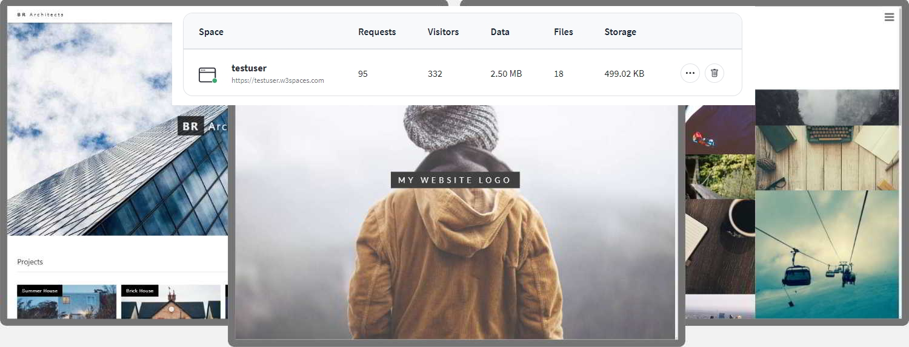

Pengenalan HTML
HTML adalah bahasa markup standar untuk halaman Web. Dengan HTML Anda dapat membuat Website Anda sendiri. HTML mudah dipelajari - Anda akan menikmatinya!
HTML adalah bahasa markup standar untuk membuat halaman Web.
Apa itu HTML?
- HTML adalah singkatan dari Hyper Text Markup Language
- HTML adalah bahasa markup standar untuk membuat halaman Web.
- HTML menggambarkan struktur halaman Web
- HTML terdiri dari serangkaian elemen
- Elemen HTML memberi tahu browser cara menampilkan konten
- Elemen HTML memberi label potongan konten seperti "ini adalah judul", "ini adalah paragraf", "ini adalah tautan", dll.
Dokumen HTML Sederhana
Contoh
<!doctype html>
<html>
<head>
<title>Page title</title>
</head>
<body>
<h1>My First Heading</h1>
<p>My first paragraph.</p>
</body>
</html>Penjelasannya :
<!DOCTYPE html>deklarasi mendefinisikan bahwa dokumen ini adalah dokumen HTML5.<html>elemen elemen akar halaman HTML<head>elemen berisi informasi meta tentang halaman HTML<title>elemen menentukan judul untuk halaman HTML (yang ditampilkan dalam bar judul browser atau tab halaman ini).<body>elemen mendefinisikan tubuh dokumen, dan merupakan wadah untuk semua isi terlihat, seperti judul, paragraf, gambar, hyperlink, tabel, daftar, dll<h1>elemen mendefinisikan judul besar<p>elemen mendefinisikan sebuah paragraf
Apa itu Elemen HTML?
Elemen HTML didefinisikan oleh tag awal, beberapa konten, dan tag akhir:
<tagname> Konten ada di sini... </tagname>
Elemen HTML adalah segalanya mulai dari tag awal hingga tag akhir:
<h1> Judul Pertama Saya </h1>
<p> Paragraf pertama saya. </p>
| Start tag | Element content | End tag |
|---|---|---|
<h1> |
My First Heading | </h1> |
<p> |
My first paragraph. | </p> |
<br> |
none |
none |
Catatan: Beberapa elemen HTML tidak memiliki konten (seperti elemen <br>). Elemen-elemen ini disebut elemen kosong. Elemen kosong tidak memiliki tag akhir!
Peramban Web
Tujuan browser web (Chrome, Edge, Firefox, Safari) adalah untuk membaca dokumen HTML dan menampilkannya dengan benar.
Browser tidak menampilkan tag HTML, tetapi menggunakannya untuk menentukan cara menampilkan dokumen:

Struktur Halaman HTML
Di bawah ini adalah visualisasi struktur halaman HTML:
Catatan: Konten di dalam bagian <body> (area putih di atas) akan ditampilkan di browser. Konten di dalam elemen <title> akan ditampilkan di bilah judul browser atau di tab halaman.
Sejarah HTML
Sejak awal World Wide Web, ada banyak versi HTML:
| Tahun | Versi |
|---|---|
| 1989 | Tim Berners-Lee invented www |
| 1991 | Tim Berners-Lee invented HTML |
| 1993 | Dave Raggett drafted HTML+ |
| 1995 | HTML Working Group defined HTML 2.0 |
| 1997 | W3C Recommendation: HTML 3.2 |
| 1999 | W3C Recommendation: HTML 4.01 |
| 2000 | W3C Recommendation: XHTML 1.0 |
| 2008 | WHATWG HTML5 First Public Draft |
| 2012 | WHATWG HTML5 Living Standard |
| 2014 | W3C Recommendation: HTML5 |
| 2016 | W3C Candidate Recommendation: HTML 5.1 |
| 2017 | W3C Recommendation: HTML5.1 2nd Edition |
| 2017 | W3C Recommendation: HTML5.2 |
Tutorial ini mengikuti standar HTML5 terbaru.
Editor HTML
Anda hanya perlu editor teks sederhana untuk mempelajari HTML.
Belajar HTML Menggunakan Notepad atau TextEdit
Halaman web dapat dibuat dan dimodifikasi dengan menggunakan editor HTML profesional. Namun, untuk mempelajari HTML kami merekomendasikan editor teks sederhana seperti Notepad (PC) atau TextEdit (Mac). Kami percaya bahwa menggunakan editor teks sederhana adalah cara yang baik untuk mempelajari HTML.
Ikuti langkah-langkah di bawah ini untuk membuat halaman web pertama Anda dengan Notepad atau TextEdit.
-
Langkah 1: Buka Notepad (PC)
Windows 8 atau lebih baru:
Buka Layar Mulai (simbol jendela di kiri bawah layar Anda). Ketik Notepad .
Windows 7 atau sebelumnya:
Buka Mulai > Program > Aksesori > Notepad
Langkah 1: Buka TextEdit (Mac)
Buka Finder > Aplikasi > TextEdit
Ubah juga beberapa preferensi agar aplikasi dapat menyimpan file dengan benar. Di Preferensi> Format> pilih "Teks Biasa"
Kemudian di bawah "Buka dan Simpan", centang kotak yang bertuliskan "Tampilkan file HTML sebagai kode HTML alih-alih teks yang diformat".
Kemudian buka dokumen baru untuk menempatkan kode.
-
Langkah 2: Tulis Beberapa HTML
Tulis atau salin kode HTML berikut ke Notepad:
<!DOCTYPE html>
<html>
<body>
<h1>My First Heading</h1>
<p>My first paragraph.</p>
</body>
</html>
-
Langkah 3: Simpan Halaman HTML
Simpan file di komputer Anda. Pilih File >Simpan sebagai di menu Notepad.
Beri nama file "index.htm" dan atur pengkodean ke UTF-8 (yang merupakan pengkodean pilihan untuk file HTML).

Tip: Anda dapat menggunakan .htm atau .html sebagai ekstensi file. Tidak ada perbedaan, terserah Anda.
-
Langkah 4: Lihat Halaman HTML di Browser Anda
Buka file HTML yang disimpan di browser favorit Anda (klik dua kali pada file, atau klik kanan - dan pilih "Buka dengan").
Hasilnya akan terlihat seperti ini:
Editor Online
Dengan editor online gratis kami, Anda dapat mengedit kode HTML dan melihat hasilnya di browser Anda. Ini adalah alat yang sempurna ketika Anda ingin menguji kode dengan cepat. Ini juga memiliki kode warna dan kemampuan untuk menyimpan dan berbagi kode dengan orang lain:
Contoh
<!DOCTYPE html>
<html>
<head>
<title>Page Title</title>
</head>
<body>
<h1>This is a Heading</h1>
<p>This is a paragraph.</p>
</body>
</html>
Klik tombol "Coba Sendiri" untuk melihat cara kerjanya.
Jika Anda ingin membuat situs web Anda sendiri dan menyimpan kode Anda secara online, coba free website builder, yang disebut W3schools Spaces :

Contoh Dasar HTML
Dalam bab ini kita akan menunjukkan beberapa contoh HTML dasar. Jangan khawatir jika kami menggunakan tag yang belum Anda pelajari.
Dokumen HTML
Semua dokumen HTML harus dimulai dengan deklarasi tipe dokumen: <!DOCTYPE html>. Dokumen HTML itu sendiri dimulai dengan <html> dan diakhiri dengan </html>. Bagian yang terlihat dari dokumen HTML adalah antara <body> dan </body>.
Contoh
<!DOCTYPE html>
<html>
<body>
<h1>My First Heading</h1>
<p>My first paragraph.</p>
</body>
</html>
Deklarasi <!DOCTYPE>
<!DOCTYPE>deklarasi mewakili jenis dokumen, dan membantu browser untuk tampilan halaman web dengan benar.
Itu hanya boleh muncul sekali, di bagian atas halaman (sebelum tag HTML apa pun).
<!DOCTYPE>deklarasi ini tidak case sensitive.
<!DOCTYPE>deklarasi HTML5 adalah:
<!DOCTYPE html>
Judul HTML
Judul HTML didefinisikan dengan tag <h1> to <h6>.
<h1>mendefinisikan judul yang paling penting. <h6>mendefinisikan heading yang paling tidak penting:
Contoh
<h1>This is heading 1</h1>
<h2>This is heading 2</h2>
<h3>This is heading 3</h3>
Paragraf HTML
Paragraf HTML didefinisikan dengan <p> tag:
Contoh
<p>This is a paragraph.</p>
<p>This is another paragraph.</p>
Tautan HTML
Tautan HTML didefinisikan dengan <a> tag:
Contoh
<a href=https://onysu.github.io/lesson/webdesain/index.html
>This is a link</a>
Tujuan tautan ditentukan dalam hrefatribut.
Atribut digunakan untuk memberikan informasi tambahan tentang elemen HTML.
Anda akan belajar lebih banyak tentang atribut di bab selanjutnya.
Gambar HTML
Gambar HTML didefinisikan dengan <img> tag.
File sumber ( src), teks alternatif ( alt), width, dan heightdisediakan sebagai atribut:
Contoh
<img src="w3schools.jpg" alt="W3Schools.com" width="104" height="142">
Bagaimana Cara Melihat Sumber HTML?
Pernahkah Anda melihat halaman Web dan bertanya-tanya "Hei! Bagaimana mereka melakukannya?"
Lihat Kode Sumber HTML:
Klik kanan di halaman HTML dan pilih "Lihat Sumber Halaman" (di Chrome) atau "Lihat Sumber" (di Edge), atau yang serupa di browser lain. Ini akan membuka jendela yang berisi kode sumber HTML halaman.
Periksa Elemen HTML:
Klik kanan pada elemen (atau area kosong), dan pilih "Inspect" atau "Inspect Element" untuk melihat elemen apa yang dibuat (Anda akan melihat HTML dan CSS). Anda juga dapat mengedit HTML atau CSS dengan cepat di panel Elemen atau Gaya yang terbuka.
Elemen HTML
Elemen HTML adalah segalanya mulai dari tag awal hingga tag akhir:
<tagname> Konten ada di sini... </tagname>
Contoh beberapa elemen HTML:
<h1> Judul Pertama Saya </h1>
<p> Paragraf pertama saya. </p>
| Start tag | Element content | End tag |
|---|---|---|
| <h1> | My First Heading | </h1> |
| <p> | My first paragraph. | </p> |
| <br> | none | none |
Catatan: Beberapa elemen HTML tidak memiliki konten (seperti elemen <br>). Elemen-elemen ini disebut elemen kosong. Elemen kosong tidak memiliki tag akhir!
Elemen HTML Bersarang
Elemen HTML dapat bersarang (ini berarti elemen dapat berisi elemen lain). Semua dokumen HTML terdiri dari elemen HTML bersarang. Contoh berikut berisi empat elemen HTML (<html>, <body>, <h1> dan <p>):
Contoh
<!DOCTYPE html>
<html>
<body>
<h1>My First Heading</h1>
<p>My first paragraph.</p>
</body>
</html>
Contoh Dijelaskan
The <html>elemen elemen root dan mendefinisikan dokumen HTML secara keseluruhan. Ini memiliki tag awal <html>dan tag akhir </html>.
Kemudian, di dalam <html>elemen ada <body> elemen:
<body>
<h1>My First Heading</h1>
<p>My first paragraph.</p>
</body>
<body>elemen mendefinisikan tubuh dokumen. Ini memiliki tag awal <body>dan tag akhir </body>. Kemudian, di dalam <body>elemen ada dua elemen lainnya: <h1>dan <p>:
<h1>My First Heading</h1>
<p>My first paragraph.</p>
<h1>elemen mendefinisikan heading. Ini memiliki tag awal <h1>dan tag akhir </h1>:
<h1>My First Heading</h1>
<p>elemen mendefinisikan sebuah paragraf. Ini memiliki tag awal <p>dan tag akhir </p>:
<p>My first paragraph.</p>
Jangan Lewati Tag Akhir, Beberapa elemen HTML akan ditampilkan dengan benar, bahkan jika Anda lupa tag akhir:
Contoh
<html>
<body>
<p>This is a paragraph
<p>This is a paragraph
</body>
</html>
Namun, jangan pernah mengandalkan ini! Hasil dan kesalahan yang tidak terduga dapat terjadi jika Anda lupa tag akhir!
Elemen HTML Kosong
Elemen HTML tanpa konten disebut elemen kosong.
<br> tag mendefinisikan satu baris, dan merupakan elemen kosong tanpa tag penutup:
Contoh
<p>This is a <br> paragraph with a line break.</p>
HTML Tidak Peka Huruf Besar-kecil
Tag HTML tidak peka huruf besar/kecil: <P> artinya sama dengan <p>. Standar HTML tidak memerlukan tag huruf kecil, kami merekomendasikan huruf kecil dalam HTML, dan menuntut huruf kecil untuk jenis dokumen yang lebih ketat seperti XHTML. Kami selalu menggunakan nama tag huruf kecil.
Referensi Tag HTML
Referensi tag W3Schools berisi informasi tambahan tentang tag ini dan atributnya.
| Tag | Keterangan |
|---|---|
| <html> | Mendefinisikan akar dari dokumen HTML |
| <body> | Mendefinisikan badan dokumen |
| <h1> ~ <h6> | Mendefinisikan judul HTML |
Atribut HTML
- Semua elemen HTML dapat memiliki atribut
- Atribut memberikan informasi tambahan tentang elemen
- Atribut selalu ditentukan di tag awal
- Atribut biasanya datang dalam pasangan nama/nilai seperti: nama="nilai"
Atribut href
<a> tag mendefinisikan hyperlink. The hrefatribut menentukan URL dari halaman link pergi ke:
Contoh
<a href="https://www.w3schools.com">Visit W3Schools</a>
Atribut src
<img> tag digunakan untuk menanamkan gambar di halaman HTML. The srcmenspesifikasikan atribut path ke gambar yang akan ditampilkan:
Contoh
<img src="img_girl.jpg">
Ada dua cara untuk menentukan URL dalam src atribut:
-
Absolute URL - Tautan ke gambar eksternal yang dihosting di situs web lain. Contoh: src="https://www.w3schools.com/images/img_girl.jpg".
Catatan: Gambar eksternal mungkin berada di bawah hak cipta. Jika Anda tidak mendapatkan izin untuk menggunakannya, Anda mungkin melanggar undang-undang hak cipta. Selain itu, Anda tidak dapat mengontrol gambar eksternal; itu bisa tiba-tiba dihapus atau diubah.
-
Relative URL - Tautan ke gambar yang dihosting di dalam situs web. Di sini, URL tidak menyertakan nama domain. Jika URL dimulai tanpa garis miring, itu akan relatif terhadap halaman saat ini. Contoh: src="img_girl.jpg". Jika URL dimulai dengan garis miring, itu akan menjadi relatif terhadap domain. Contoh: src="/images/img_girl.jpg".
Tip: Hampir selalu yang terbaik adalah menggunakan URL relatif. Mereka tidak akan rusak jika Anda mengubah domain.
Atribut lebar dan tinggi
The <img> tag juga harus berisi widthdan heightatribut, yang menentukan lebar dan tinggi gambar (dalam pixel):
Contoh
<img src="img_girl.jpg" width="500" height="600">
Atribut alt
altAtribut yang diperlukan untuk <img> tag menentukan teks alternatif untuk gambar, jika gambar karena alasan tertentu tidak dapat ditampilkan. Hal ini dapat disebabkan oleh koneksi yang lambat, atau kesalahan pada srcatribut, atau jika pengguna menggunakan pembaca layar.
Contoh
<img src="img_girl.jpg" alt="Girl with a jacket">
Contoh
Lihat apa yang terjadi jika kami mencoba menampilkan gambar yang tidak ada:
<img src="img_typo.jpg" alt="Girl with a jacket">
Anda akan mempelajari lebih lanjut tentang gambar di bab Gambar HTML kami .
Atribut style
The styleatribut digunakan untuk menambah gaya untuk elemen, seperti warna, font, ukuran, dan banyak lagi.
Contoh
<p style="color:red;">This is a red paragraph.</p>
Atribut lang
Anda harus selalu menyertakan langatribut di dalam <html> tag, untuk mendeklarasikan bahasa halaman Web. Ini dimaksudkan untuk membantu mesin pencari dan browser.
Contoh berikut menentukan bahasa Inggris sebagai bahasa:
<!DOCTYPE html>
<html lang="en">
<body>
...
</body>
</html>
Kode negara juga dapat ditambahkan ke kode bahasa di lang atribut. Jadi, dua karakter pertama menentukan bahasa halaman HTML, dan dua karakter terakhir menentukan negara.
Contoh berikut menentukan bahasa Inggris sebagai bahasa dan Amerika Serikat sebagai negara:
<!DOCTYPE html>
<html lang="en-US">
<body>
...
</body>
</html>
Anda dapat melihat semua kode bahasa di Referensi Kode Bahasa HTML kami .
Atribut title
Title atribut mendefinisikan beberapa informasi tambahan tentang elemen. Nilai atribut title akan ditampilkan sebagai tooltip saat Anda mengarahkan mouse ke elemen:
Contoh
<p title="I'm a tooltip">This is a paragraph.</p>
Kami Sarankan: Selalu Gunakan Atribut Huruf Kecil. Standar HTML tidak memerlukan nama atribut huruf kecil. Atribut title (dan semua atribut lainnya) dapat ditulis dengan huruf besar atau kecil seperti title atau TITLE.
Namun, kami merekomendasikan atribut huruf kecil dalam HTML, dan menuntut atribut huruf kecil untuk jenis dokumen yang lebih ketat seperti XHTML.
Kami selalu menggunakan nama atribut huruf kecil.
Kami Sarankan: Selalu Kutip Nilai Atribut
Standar HTML tidak memerlukan tanda kutip di sekitar nilai atribut. Namun, kami merekomendasikan kutipan dalam HTML, dan meminta kutipan untuk jenis dokumen yang lebih ketat seperti XHTML.
Bagus:
<a href="https://www.w3schools.com/html/">Visit our HTML tutorial</a>
Buruk:
<a href=https://www.w3schools.com/html/>Visit our HTML tutorial</a>
Terkadang Anda harus menggunakan tanda kutip. Contoh ini tidak akan menampilkan atribut judul dengan benar, karena berisi spasi:
Contoh
<p title=About W3Schools>
Kami selalu menggunakan tanda kutip di sekitar nilai atribut.
Kutipan Tunggal atau Ganda?
Tanda kutip ganda di sekitar nilai atribut adalah yang paling umum dalam HTML, tetapi tanda kutip tunggal juga dapat digunakan. Dalam beberapa situasi, ketika nilai atribut itu sendiri berisi tanda kutip ganda, perlu menggunakan tanda kutip tunggal:
<p title='John "ShotGun" Nelson'>
Atau sebaliknya:
<p title="John 'ShotGun' Nelson">
Ringkasan Bab
- Semua elemen HTML dapat memiliki atribut
- The href atribut <a>Menentukan URL halaman link pergi ke
- The src atribut <img>menentukan path ke gambar yang akan ditampilkan
- The width dan height atribut <img>memberikan informasi ukuran untuk gambar
- The alt atribut <img>menyediakan teks alternatif untuk gambar
- The style atribut digunakan untuk menambah gaya untuk elemen, seperti warna, font, ukuran, dan lebih
- The lang atribut dari <html> tag menyatakan bahasa halaman Web
- The title atribut mendefinisikan beberapa informasi tambahan tentang elemen
Referensi Atribut HTML
Judul HTML
Judul HTML adalah judul atau subjudul yang ingin Anda tampilkan di halaman web.
Contoh
Heading 1
Heading 2
Heading 3
Heading 4
Heading 5
Heading 6
Judul HTML
Judul HTML didefinisikan dengan tag <h1> to <h6>. <h1>mendefinisikan judul yang paling penting. <h6> mendefinisikan heading yang paling tidak penting.
Contoh
<h1>Heading 1</h1>
<h2>Heading 2</h2>
<h3>Heading 3</h3>
<h4>Heading 4</h4>
<h5>Heading 5</h5>
<h6>Heading 6</h6>
Catatan: Browser secara otomatis menambahkan beberapa spasi (margin) sebelum dan sesudah heading.
Judul Itu Penting
Mesin pencari menggunakan judul untuk mengindeks struktur dan konten halaman web Anda. Pengguna sering membaca sepintas halaman berdasarkan judulnya. Penting untuk menggunakan heading untuk menunjukkan struktur dokumen. <h1>heading sebaiknya digunakan untuk heading utama, diikuti <h2> heading, kemudian heading yang kurang penting <h3>, dan seterusnya.
Catatan: Gunakan heading HTML untuk heading saja. Jangan gunakan heading untuk membuat teks menjadi BESAR atau tebal.
Judul yang lebih besar
Setiap heading HTML memiliki ukuran default. Namun, Anda dapat menentukan ukuran untuk setiap heading dengan styleatribut tersebut, menggunakan font-sizeproperti CSS :
Contoh
<h1 style="font-size:60px;">Heading 1</h1>
Referensi Tag HTML
Referensi tag W3Schools berisi informasi tambahan tentang tag ini dan atributnya.
| Tag | Keterangan |
|---|---|
| <html> | Mendefinisikan akar dari dokumen HTML |
| <body> | Mendefinisikan badan dokumen |
| <h1> ~ <h6> | Mendefinisikan judul HTML |
Paragraf selalu dimulai pada baris baru, dan biasanya berupa blok teks.
Paragraf HTML
<p>Elemen HTML mendefinisikan sebuah paragraf.
Sebuah paragraf selalu dimulai pada baris baru, dan browser secara otomatis menambahkan beberapa spasi (margin) sebelum dan sesudah paragraf.
Contoh
<p>This is a paragraph.</p>
<p>This is another paragraph.</p>
Tampilan HTML
Anda tidak dapat memastikan bagaimana HTML akan ditampilkan. Layar besar atau kecil, dan jendela yang diubah ukurannya akan menghasilkan hasil yang berbeda. Dengan HTML, Anda tidak dapat mengubah tampilan dengan menambahkan spasi atau baris tambahan dalam kode HTML Anda.
Browser akan secara otomatis menghapus spasi dan garis tambahan saat halaman ditampilkan:
Contoh
<p>
This paragraph
contains a lot of lines
in the source code,
but the browser
ignores it.
</p>
<p>
This paragraph
contains a lot of spaces
in the source code,
but the browser
ignores it.
</p>
Aturan Horisontal HTML
<hr> tag mendefinisikan istirahat tematik di halaman HTML, dan yang paling sering ditampilkan sebagai aturan horisontal.
<hr>elemen digunakan untuk memisahkan konten (atau menentukan perubahan) dalam sebuah halaman HTML:
Contoh
<h1>This is heading 1</h1>
<p>This is some text.</p>
<hr>
<h2>This is heading 2</h2>
<p>This is some other text.</p>
<hr>
<hr> tag adalah tag kosong, yang berarti bahwa ia tidak memiliki tag akhir.
Pemisahan Baris HTML
<br>Elemen HTML mendefinisikan jeda baris. Gunakan <br>jika Anda ingin jeda baris (baris baru) tanpa memulai paragraf baru:
Contoh
<p>This is<br>a paragraph<br>with line breaks.</p>
<br> tag adalah tag kosong, yang berarti bahwa ia tidak memiliki tag akhir.
Masalah Puisi
Puisi ini akan ditampilkan dalam satu baris:
Contoh
<p>
My Bonnie lies over the ocean.
My Bonnie lies over the sea.
My Bonnie lies over the ocean.
Oh, bring back my Bonnie to me.
</p>
Solusi - Elemen <pre> HTML
<pre>Elemen HTML mendefinisikan teks yang telah diformat sebelumnya. Teks di dalam <pre>elemen ditampilkan dalam font lebar tetap (biasanya Courier), dan mempertahankan spasi dan jeda baris:
Contoh
<pre>
My Bonnie lies over the ocean.
My Bonnie lies over the sea.
My Bonnie lies over the ocean.
Oh, bring back my Bonnie to me.
</pre>
Referensi Tag HTML
Referensi tag W3Schools berisi informasi tambahan tentang elemen HTML dan atributnya.
| Tag | Keterangan |
|---|---|
| <p> | Defines a paragraph |
| <hr> | Defines a thematic change in the content |
| <br> | Inserts a single line break |
| <pre> | Defines pre-formatted text |